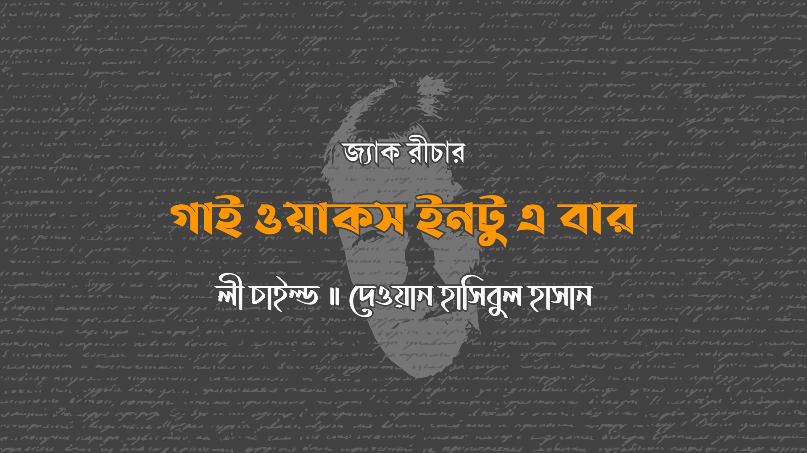

ওর বয়স উনিশের মত হবে। এর বেশি না। সম্ভবত কমই। কোন ইন্স্যুরেন্স কোম্পানি হয়তো ভেবে নিতো আরো ষাট বছর আয়ু আছে ওর। তবে আমি বুঝতে পারছি, ঠিকভাবে হিসেব করলে আয়ু ছত্রিশ ঘন্টা, অথবা ছত্রিশ মিনিট যদি শুরুতেই ঝামেলা বেঁধে যায়।
ও স্বর্ণকেশী, নীল-নয়না, তবে আমেরিকান না। বহু প্রজন্ম ধরে প্রাচুর্যের মাঝে বেড়ে উঠার কারণে আমেরিকান মেয়েদের চেহারায় আভা দেখা যায়, থাকে স্নিগ্ধতা। এই মেয়েটা অন্যরকম। ওর উত্তরসূরীরা শঙ্কা আর দুর্দশা কি তা ভালো করে জানতো। উত্তরাধীকারসূত্রে সেগুলো প্রকাশ পাচ্ছে ওর চেহারায়, ওর শরীরে, ওর চলাফেরায়। ওর চোখগুলো সতর্ক। ও রোগা। এটা সেরকম রোগা না যেরকমটা ডায়েট করে আপনি বানাতে পারবেন, এটা ডারউইন তত্ত্বের রোগা, আপনার দাদা-দাদির ভাত-কাপড় না থাকলে, খেয়ে না খেয়ে থাকলে আপনি যেরকম রোগা হবেন সেরকম। ওর চলাফেরা ঠুনকো আর চিন্তিত, একটু সতর্ক, একটু ভীত, তবে ওর চেহারা দেখে মনে হচ্ছে যেন জীবনের শ্রেষ্ঠ সময় কাটাচ্ছে।
নিউ ইয়র্কের একটা বারে ও বসে আছে। বিয়ার পান করছে। একটা ব্যান্ডের গান শুনছে, গিটারিস্টের প্রেমে পড়েছে। সেটা পরিষ্কার। ওর দৃষ্টির যেটুকুতে সতর্কতা নেই, সেটুকু জুড়ে আছে প্রশংসা, আর সেটার লক্ষ্য তার দিকে। ও সম্ভবত রাশিয়ান। ধনী। স্টেজের সামনের এক টেবিলে একা বসে আছে। ওর সামনে এটিএম থেকে সদ্য তোলা কড়কড়ে নোট আর ওগুলো থেকে দাম চুকাচ্ছে প্রতিটা নতুন বোতলের, ফেরতের প্রত্যাশা না করে। ওয়েট্রেসদের প্রিয়মুখ ও। ঘরের শেষমাথায় এক লোক চওড়া বেঞ্চে বসে আছে। ওর বডিগার্ড হবে হয়তো। লোকটা লম্বা চওড়া। মাথা কামানো। কালো টি-শার্টের উপরে কালো স্যুট পরে আছে। তার কল্যাণে ও উনিশ কিংবা তার কম হয়েও শহরের কোন বারে বসে বিয়ার পান করতে পারছে। এটা এরকম কোন চকচকে জায়গা না যেখানে অপ্রাপ্তবয়স্ক ধনী মেয়েদের জন্য পলিসি থাকবে, না পক্ষে, না বিপক্ষে। এটা ব্লীকার স্ট্রীটের নোংরা প্রান্ত, হ্যাংলা ছেলেমেয়েদের আস্তানা, পড়ার খরচ জোগানোর ধান্দায় থাকে। বুঝতে পারছি, তারা ওকে আর ওর বডিগার্ডকে খেয়াল করেছে আর তারপর সিদ্ধান্ত নিয়েছে ঝামেলা বাদ দিয়ে উদার বখশিস বাগিয়ে নেওয়ার।
আমি মিনিট খানেক ওকে দেখে অন্যদিকে ফিরলাম। আমার নাম জ্যাক রীচার। একসময় সামরিক পুলিশ ছিলাম, অনেক আগের কথা। যতোসময় পুলিশে ছিলাম, এখন প্রায় ততোসময় ধরে পুলিশের বাইরে। কিন্তু পুরোনো অভ্যাস সহজে মরে না। আমি বারেও ওরকমই প্রবেশ করেছি যেমনটা সবখানে করে থাকি, সতর্কভাবে। বেলা দেড়টা। ট্রেনে থেকে নামলাম ওয়েস্ট ফোর্থে। সিক্সথ এভিনিউ ধরে দক্ষিণ দিকে হেঁটে হেঁটে ব্লীকারে পৌঁছোলাম, তারপর বামে মোড় নিয়ে থামলাম ফুটপাতে। গান শোনার ইচ্ছে ছিলো, তবে অতি উৎসাহীদের জটলার মধ্যে ঘোল পাঁকিয়ে ন। মানুষের সবচেয়ে ছোট জটলাটা দরজা পর্যন্ত অর্ধেক উড়াল দেওয়া সিঁড়ির পাশে। একটা কালো চকচকে মার্সিডিস সেডান ফুটপাত ঘেঁষে দাঁড়ানো, ড্রাইভার সীটে বসে ছিলো। দেয়ালের কারণে মিউজিক আসছিলো ফিল্টার হয়ে, ভোঁতা শোনাচ্ছিলো। তবে চটপটে বেজ লাইন আর ঝরঝরে ড্রামের বাজনা ঠিকই শুনতে পাচ্ছিলাম। তাই সিঁড়ির দিকে এগিয়ে গেলাম। ভেতরে পা বাড়ালাম পাঁচ ডলার চাঁদা দিয়ে।
বের হওয়ার দুটো পথ। একটা আমি যে দরজা দিয়ে এলাম, অপরটা পেছনের দিকে অন্ধকার, লম্বা ওয়াশরুম করিডরের শেষ মাথায়। ঘরটা সরু আর নব্বই ফুটের মত গভীর। ভেতরে ঢুকে সামনে বাম পাশে বার, তারপর চওড়া ঘোড়ার খুরের মত বেঞ্চের সারি, তারপর এক থোকা ছড়িয়ে ছিটিয়ে রাখা টেবিল, আগের রাতে যেগুলোর উপর হয়তো নাচের আসর বসেছিলো। তারপর স্টেজ, যেখানে ব্যান্ড গান করছে।
ব্যান্ডটাকে দেখে মনে হচ্ছে কোন ট্যালেন্ট এজেন্সীর ফাইল অদল-বদলের দুর্ঘটনায় একসাথে জুড়ে গেছে। বেজিস্ট ভেস্টসহ স্যুট পরা এক মোটাসোটা কৃষ্ণাঙ্গ। নিষ্ঠার সাথে সে বেজের তারে আঙুল চালিয়ে যাচ্ছে। ড্রামার তার চাচা হবে হয়তো। লোকটা বিশালদেহী বুড়ো, ছোটখাটো বাদ্যযন্ত্রটির পেছনে কুঁজো হয়ে আছে। গায়ক হারমোনিকাও বাজাচ্ছে। বয়সে বেজিস্টের থেকে বড় হবে আর ড্রামার থেকে ছোট। তবে দুজনের থেকেই চওড়া। ষাটের মত বয়স, স্বাস্থ্য ভালোই, তবে ছোটাছুটির উপযুক্ত না।
গিটারিস্ট একদম আলাদা। সে যুবক, শেতাঙ্গ আর ছোটখাটো। বয়স হয়তো বিশ, উচ্চতা হয়তো পাঁচ ফুট ছয়, ওজন হয়তো একশ ত্রিশ পাউন্ড। চকচকে নতুন অ্যামপ্লিফায়ারে জোড়া দেওয়া ঝকঝকে গিটার তার হাতে। সব ইনস্ট্রুমেন্ট আর ইলেক্ট্রনিক্স মিলে জায়গাটায় তীক্ষ্ণ শব্দ সৃষ্ট করে প্রতিধ্বনি তুলছে। মাত্রারিক্ত তীক্ষ্ণ শব্দ। মনে হচ্ছে ঘরের বাতাস যেন শক্ত হয়ে এঁটে আছে। আয়তনের আর একটুকুও অবশিষ্ট নেই।
তবে মিউজিকটা চমৎকার। কৃষ্ণাঙ্গ তিনজন পেশাদার বুড়ো, আর শেতাঙ্গ ছেলেটাও সঙ্গীতের স্বরলিপি জানে, জানে কখন, কিভাবে, কিরকম বাজাতে হবে। একটা লাল টিশার্ট, কালো প্যান্ট আর একটা সাদা টেনিস শ্যু পরে আছে সে। তার চেহারায় প্রকাশ পাচ্ছে গম্ভীর অভিব্যক্তি। দেখে বিদেশি মনে হচ্ছে তাকে। সম্ভবতও সেও রাশিয়ান।
গানের প্রথমভাগে পুরো ঘরজুড়ে চোখ বুলিয়ে কাটালাম, গুনলাম কতজন আছে, চেহারা খুঁটিয়ে দেখলাম, দেহাভঙ্গি বিশ্লেষণ করলাম। পুরোনো অভ্যাস সহজে মরে না। শেষমাথায় টেবিলের নিচে হাত রেখে দুজন লোক বসে আছে। একজন ক্রেতা, আরেকজন বিক্রেতা, স্পষ্টত, লেনদেন হচ্ছে হাত ছুঁয়ে আর নিশ্চিত করছে চোখ টিপে। বারের কর্মচারীরা বরফকেস থেকে নকল বিয়ার বিক্রি করে মালিকের লাল বাত্তি জ্বালিয়ে দিচ্ছে। ঘরের তিনটা থেকে দুইটা বোতল বৈধ, ফ্রীজের তাক থেকে দেওয়া, তিন নাম্বারটা আসছে তাদের নিজস্ব কুলার থেকে। আমি ওরকমই একটা পেলাম। লেবেল ভেজা আর বড়সড় মার্জিন ওয়ালা। আমি বোতলটা হাতে নিয়ে কোনার সীটে গিয়ে দেয়ালে পিঠ ঠেকিয়ে বসলাম। এই সময়টাতে খেয়াল করলাম মেয়েটা টেবিলে এক বসে আছে আছে, আর ওর বডিগার্ড তার বেঞ্চে। আন্দাজ করলাম বাইরে রাখা মার্সিডিসটা ওদের। আন্দাজ করলাম ওর বাবা দ্বিতীয় সারির কোন মাফিয়া, মিলিওনিয়ার তবে বিলিওনিয়ার না, খেয়ালী মেয়েকে এমন এক এটিএম কার্ড হাতে দিয়ে নিউ ইয়র্ক ইউনিভার্সিটিতে চার বছরের জন্য ছেড়ে দিয়েছে, যে কার্ডের টাকা ফুরোয় না।
ঘরের আশি জনের মাঝে দুজন। কোন সমস্যা না।
যতক্ষণ না আরো দুজন এসে উপস্থিত হলো।
জোড়ায় এসেছে। লম্বা শেতাঙ্গ যুবকদ্বয়, সস্তা আঁটসাঁট চামড়ার জ্যাকেট, ভোঁতা খুর দিয়ে কামানোর ফলে মাথায় কাটা ছেঁড়া দাগ পড়েছে। আরো রাশিয়ান, হয়তো। অপারেটর, সন্দেহ নেই। জড়িত, প্রশ্ন ছাড়াই। সম্ভবত, পৃথিবীর সেরা না আবার কমও না। তারা একজন আরেকজনের থেকে দূরে গিয়ে বসলো তবে তাদের দৃষ্টি টেবিলে একা বসে থাকা মেয়েটার উপর গিয়ে ত্রিভুজ তৈরি করলো। তারা চিন্তিত, অবিচল, আর একটু ভীতও। আমি লক্ষণ ধরতে পারলাম। অনেকবার আমি নিজের ভেতর এমনটা অনুভব করেছি। তারা কিছুক্ষণের মধ্যেই কাজে নেমে পড়বে। তাহলে দুই মাফিয়ার মাঝে কামড়াকামড়ি বেঁধেছে, একজন ড্রাইভার আর বডিগার্ড দিয়ে বাচ্চাকে রক্ষার চেষ্টা করছে, আরেকজন সবখানে লোক পাঠাচ্ছে তাকে ছিনিয়ে নিতে। তারপর আসবে মুক্তিপণ, অত্যাচার, দাবি, তারপর ভাগ্যের হাতবদল, অথবা ইউরেনিয়ামের ইজারা, মালিকানা তেলের, অথবা কয়লার, অথবা গ্যাসের।
ব্যবসা, মস্কো স্টাইলে।
তবে সাধারণত সফল ব্যবসা না। কিডন্যাপের রয়েছে হাজারো গতিবিধি, আর হাজারো উপায়ে ভন্ডুল হতে পারে সব। কিডন্যাপের শিকার হওয়া ব্যক্তির প্রত্যাশিত গড় আয়ুষ্কাল ছত্রিশ ঘন্টা। কেউ কেউ টিকে যায়, তবে বেশির ভাগই পারে না। কেউ কেউ সাথে সাথেই মারা যায়, প্রাথমিক আতঙ্কে।
মেয়েটার টাকার বান্ডিল ওয়েট্রেসদের মৌমাছির মত আকর্ষণ করছে। আর ও কাউকে তাড়িয়ে দিচ্ছে না। একটার পর একটা বোতল শেষ করে যাচ্ছে। আর বিয়ার তো বিয়ারই। কিছুক্ষণ পরেই বারবার ওর ওয়াশরুম দর্শনে যেতে হবে। ওয়াশরুম করিডর দীর্ঘ আর অন্ধকার, আর এর শেষমাথায় রাস্তায় বেরোনোর দরজাও আছে।
জমকালো আলোর প্রতিফলনে ওকে দেখছি যেখানে মিউজিক আমাকে জাপটে ধরে চিৎকার করছে। লোকদুটো ওকে দেখছে। ওর বডিগার্ড ওকে দেখছে। ও দেখছে গিটারিস্টকে। সে মনোযোগ রাখার চেষ্টা করছে, সুর আর কোরাসের পরিবর্তন হচ্ছে, তবে থেকে থেকে মাথা তুলে হাসছে সে, বিশেষ করে স্টেজে বাজানোর গর্বে, তবে দুবার সোজা মেয়েটার দিকে। প্রথম হাসিটা ছিলো লাজুক, আর দ্বিতীয়টা একটু চওড়া।
মেয়েটা উঠতে গিয়ে টেবিলের পাটাতনের সাথে উরুতে গুঁতো খেল, তারপর সেটা এড়িয়ে পেছনের করিডরের দিকে হাঁটা শুরু করলো। আমি ওখানে আগেই চলে গেলাম। ব্যান্ডের শব্দ গর্জনের মত শোনাচ্ছে এখানে। মেয়েদের রুম অর্ধেক রাস্তাতে। ছেলেদের রুম একেবারে শেষ প্রান্তে। আমি দেয়ালের সাথে সোজা হয়ে দাঁড়িয়ে মেয়েটাকে আমার দিকে আসতে দেখলাম। ওর পায়ে উঁচু হিল, পরনে আটঁসাঁট প্যান্ট, ছোট কিন্তু নিঁখুত পদক্ষেপ। এখনো মাতাল হয়নি। ও তো রাশিয়ান। রেস্টরুমের দরজায় ওর ফ্যাকাশে হাত রেখে ধাক্কা দিলো। ভেতরে চলে গেল ও।
দশ সেকেন্ড যেতে না যেতেই লোকদুটো করিডরে পা রাখলো। ভেবেছিলাম তারা ওর জন্য বাইরে অপেক্ষা করবে। কিন্তু না। তারা আমার দিকে এমনভাবে তাকালো যেন আমি বিল্ডিঙের একটা পিলার। মেয়েদের ওয়াশরুমে ঢুকলো তারা। একজন একজন করে। ওদের পেছনে দরজা সশব্দে বন্ধ হলো।
মিউজিক বেজে চলেছে।
আমি তাদের পেছন পেছন ঢুকলাম। প্রতিদিনই নতুন কিছুর দেখা মিলে। আমি আগে কখনো মেয়েদের বাথরুম দেখিনি। ডান দিকে স্টল আর বায়ে সিঙ্ক। উজ্জ্বল আলো আর পারফিউমের ঘ্রাণ। মেয়েটা পেছনের দেয়ালের কাছে দাঁড়িয়ে। লোকদুটো ফিরে আছে মেয়েটার দিকে। তাদের পেছনটা আমার দিকে। আমি বললাম, “হেই,” কিন্তু তারা শুনতে পেল না। আওয়াজ অনেক। আমি ওদের কনুই ধরলাম, দু হাতে দুজনের। তারা তড়িৎ ঘুরে দাঁড়ালো, লড়াই করতে প্রস্তুত, কিন্তু তারপর থামলো। তাদের স্বপ্নের ফ্রিজের থেকেও বিশাল আমি। কিছুক্ষণ স্থির দাঁড়িয়ে থাকলো তারা আর তারপর আমাকে ফেলে দরজা টেনে বাইরে বেরিয়ে গেল।
মেয়েটা আমার দিকে এক মুহূর্ত এমন এক অনুভূতি নিয়ে তাকিয়ে রইলো যার অর্থ আমার জানা নেই। তারপর ওকে ওর কাজ সারতে দিয়ে আমি বাইরে বেরিয়ে এলাম। আমার জায়গায় গিয়ে বসলাম। লোকদুটো এরই মধ্যে নিজ স্থানে ফিরে গেছে। বডিগার্ড নিরাসক্ত। সে স্টেজের দিকে তাকিয়ে আছে। গান প্রায় শেষের দিকে। মেয়েটা এখনো বাথরুমে।
মিউজিক থেমে গেল। লোকদুটো উঠে করিডর ধরে হাঁটা শুরু করলো। ঘরটা হঠাৎ সরব হয়ে উঠলো, লোকজন উঠে চলাচল শুরু করলো। আমি বডিগার্ডের দিকে এগিয়ে গিয়ে কাঁধে টোকা দিলাম। সে খেয়াল করলো না। একটুও নড়লো না সে, যতক্ষণ না গিটারিস্ট স্টেজ থেকে নামা শুরু করলো। তারপর সে উঠে দাঁড়ালো, দুজনের নড়াচড়ায় নিখুঁত ছন্দ। আমি বুঝতে পারলাম আমি ভুল করেছি। খামখেয়ালী মেয়ে না, খামখেয়ালী ছেলে। বাবা গিটার, অ্যাম্প কিনে ব্যাকিং মিউজিশিয়ান ভাড়া করে দিয়েছে। ছেলেটার স্বপ্ন। শোবার ঘর থেকে স্টেজে। তার ড্রাইভার ফুটপাতের পাশে গাড়িতে বসে, বডিগার্ডের চোখ তার উপর। বিপক্ষ দল দুই সদস্যের না, তিন সদস্যের। মায়াজালের দল। ছেলেটার স্বপ্ন। একটা ক্লাসিক প্রেমফাঁদ। বাথরুমে শেষ মিনিটের কৌশল নিয়ে শলা পরামর্শ, আর তারপর শুরু কাজ।
আমি ঠেলে জায়গা করে পেছনের দরজা দিয়ে রাস্তায় বেরিয়ে এলাম, বডিগার্ডের অনেক আগেই, ঠিক যখন মেয়েটা ছেলেটাকে জড়িয়ে ধরলো আর অর্ধচক্র ঘুরে লোকদুটোর দিকে ঠেলতে শুরু করলো। আমি প্রথমজনকে সজোরে ঘুসি মারলাম আর দ্বিতীয়জনকে মারলাম তার থেকেও জোরে, মুখ থেকে রক্ত বেরিয়ে আমার শার্ট ভিজিয়ে দিলো। লোকদুটো সরে গেলো, মেয়েটা পালালো। আর তারপর বডিগার্ডের দেখা মিললো। আমি তার কাছ থেকে টিশার্ট নিয়ে নিলাম। রক্তের দাগ চোখে পড়তো। তারপর সামনের দরজা দিয়ে বাইরে বেরোলাম। ডানে মোড় নেওয়ার কথা সবাই ভাববে, তাই আমি বামে মোড় নিলাম। ব্লীকার আর লাফিয়েটের ছয় নম্বর ট্রেনে চড়ে বসলাম, উত্তর দিকে যাচ্ছি, দিনের শেষ ট্রেন। স্থির হয়ে বসে আশেপাশের চেহারা গুলোর দিকে নজর দিলাম। পুরোনো অভ্যাস সহজে মরে না।